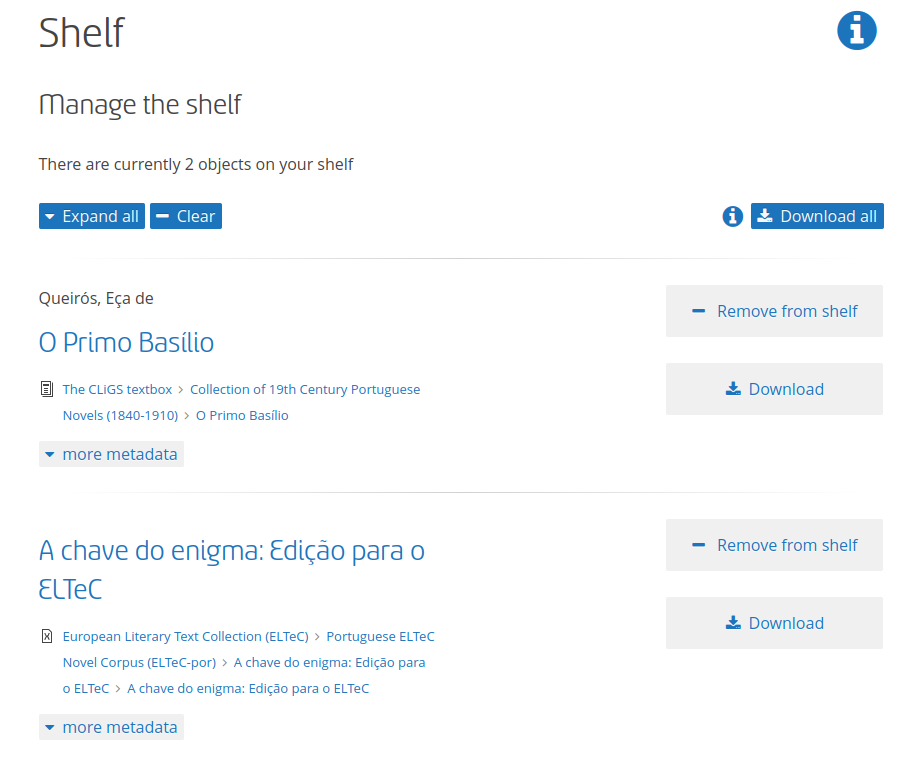

Text+ User Story: CLiGS Textbox
Ulrike Henny-Krahmer (Universität Rostock)
Workshop "Text+: Digitale Forschung auf der Grundlage von Text- und Sprachdaten bereichern", DHd 2025, Bielefeld, 3. März 2025.
Präsentation: https://hennyu.github.io/dhd25_textplus/


Überblick
- Hintergrund: CLiGS Textbox
- User Story: Ziele
- Lösungen im Kontext von Text+
- Was bleibt?
Hintergrund: CLiGS Textbox
CLiGS
- Projekt CLiGS: Computergestützte Literarische Gattungsstilistik
- e-Humanities-Nachwuchsgruppe, gefördert vom BMBF (2014–2020, Universität Würzburg, Leitung: Christof Schöch)
- Ziele des Projekts: Verknüpfung von Fragestellungen aus dem Bereich der Gattungstheorie und Stilistik mit der quantitativen Analyse literarischer Texte
- Korpora: romanische Literaturen, 17.–20. Jahrhundert
Im Projekt wurden mehrere neue Korpora in verschiedenen Sprachen und zu verschiedenen Gattungen zusammengestellt und kuratiert.
CLiGS Textbox
- Auswahl der Korpora aus dem CLiGS-Projekt
- Sprachen: Französisch, Spanisch, Italienisch, Portugiesisch
- Textsorten: Romane, Novellen, Kurzgeschichten, Dramen
- in früher Projektphase publiziert
Die Texte sind in XML-TEI aufbereitet und enthalten verschiedene Metadaten (u.a. administrativ und deskriptiv).
CLiGS Textbox
Wir haben die Textbox zunächst auf GitHub publiziert und auf Zenodo archiviert.
User Story: Ziele
User Story: CLiGS Textbox
- 2020 verfasst von José Calvo Tello, Christof Schöch, Ulrike Henny-Krahmer
- Nachteil von GitHub und Zenodo:
"They are not necessarily the first place to look for literary corpora, do not offer special features for text or literary texts, such as presenting the works together with other versions (different editions, different languages), nor are the texts or metadata properly indexed by these tools. They also do not facilitate to move the texts to other DH tools."
Ziele der User Story
- Die Korpora sollten langzeitarchiviert werden, in Repositorien, die für die Community spezifisch sind
- Die Korpora sollten zitierbar und eindeutig referenzierbar sein
- Metadaten und Daten sollten vollständig indexiert werden
- Wichtige Eigenschaften (z. B. Textsprache) sollten angezeigt werden
- Nutzer:innen sollten sowohl einzelne Texte als auch gesamte Korpora mit einem Klick herunterladen können
- Es sollte einfach sein, die Texte mit Texten anderer Korpora zu kombinieren
- Es sollte einfach sein, die Texte an verschiedene Tools zu übergeben
- Die Konversion zu anderen Formaten (.txt, .pdf, .epub, ...) sollte einfach sein
- Die Konversion der Metadaten in RDF sollte unterstützt werden
Ziele der User Story
Das sind ganz schön viele Ziele und Wünsche! Ob das inzwischen alles geklappt hat?
Lösungen im Kontext von Text+
TextGrid als Daten-Dienst
Das TextGrid Repository & Laboratory erfüllt schon viele unserer Anforderungen!
CLiGS Textbox im TextGrid Repository
Durch die Initiative von José Calvo Tello (SUB Göttingen) ist die Textbox inzwischen ein Projekt im TextGrid Repository.
CLiGS Textbox im TextGrid Repository
✓ 1. Die Korpora sollten langzeitarchiviert werden.
CLiGS Textbox im TextGrid Repository
✓ 2. Die Korpora sollten zitierbar und eindeutig referenzierbar sein.
CLiGS Textbox im TextGrid Repository
✓ 3. Metadaten und Daten sollten vollständig indexiert werden.
Aber: woher die Werte für die Metadaten kennen, nach denen man suchen soll? (z. B. "por" für Portugiesisch)
Aber: es werden nicht alle Metadaten indexiert (?)
CLiGS Textbox im TextGrid Repository
✓ 4. Wichtige Eigenschaften (z. B. Textsprache) sollten angezeigt werden.
Ja, aber die Sprache wird erst links angezeigt, wenn man danach gesucht hat! (mit der Metadatensuche)
CLiGS Textbox im TextGrid Repository
✓ 5. Nutzer:innen können einzelne Texte und gesamte Korpora mit einem Klick herunterladen.
CLiGS Textbox im TextGrid Repository
✓ 6. Nutzer:innen können ihre Texte einfach mit solchen aus anderen Korpora kombinieren.
CLiGS Textbox im TextGrid Repository
✓ 7. Texte sollten einfach an andere Tools übergeben werden können.
CLiGS Textbox im TextGrid Repository
✓ 8. Die Konversion in andere Formate sollte einfach sein.
CLiGS Textbox im TextGrid Repository
? 9. Die Konversion der Metadaten in RDF sollten unterstützt werden.
Was bleibt?
Was bleibt?
Was wir nicht wissen:
Wie gut hätte die Integration der Textbox in TextGrid geklappt, wenn José Calvo Tello nicht zufällig inzwischen Mitarbeiter an der SUB Göttingen und im Projekt Text+ beteiligt wäre?
Was bleibt?
Daher unser Fazit:
- Dienste von Text+ weiter gut in den Fach-Communities bekannt machen!
- Die Community weiter gut darin unterstützen, die Dienste für eigene Daten anzuwenden!
Vielen Dank für die Aufmerksamkeit!
Präsentation:
https://hennyu.github.io/dhd25_textplus/